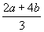

"Java Liaison" column
Richard Gillam
March 1999
In the previous installments of this column, I’ve tried to dispel (or minimize) the big complaints about Java and have focused on its standard libraries and runtime environment. This time, I’d like to look more closely at the core language itself and some of its warts.
The designers of Java decided to make Java look and feel more or less like C++ because
so many programmers are familiar with C++. Since the underlying philosophy of Java was
very different, they had to depart from the C++ model, often radically, in many places.
They also made some smaller syntactic changes to improve readability and usability.
Furthermore, they made a conscious decision to simplify the language, jettisoning
whole features of C++ that they deemed to be unnecessary. This may or may not have been a
good idea, but C++ programmers used to these features will be justifiably annoyed at their
absence in Java. I’d like to look at four such features of C++ and show how (when
possible) their absence in Java can be worked around.
The most conspicuous omission, and one of the ones that spark really heated religious wars, is operator overloading. Java preserves function-name overloading, but not operator overloading.
This was a very intentional omission. The designers of the language felt that operator overloading wasn’t really necessary. It added complexity without enabling you to do anything you couldn’t do by other means.
Many people have cried foul. They use operator overloading all the time, it’s
convenient, and it simplifies their code. One example is scientific applications that
define their own numeric types, such as Complex, Matrix, Ratio,
or Bignum. If you’re doing a lot of math on different data types, you
don’t want to mess with manually converting types everywhere, and more importantly,
you don’t want to have to do a + b with some types of a and
b and add(a, b) with other types. This is confusing and
inconsistent.
You could, of course, standardize on the add(a, b) format for all
mathematical operations, but you lose automatic operator precedence and everything becomes
much longer and uglier. Instead of "(2 * a + 4 * b) / 3",
you’d have to write something like "div(add(mult(2, a), mult(4, b)),
3)". Which one of these expressions is easier to read? (Of course,  would be easier yet, but it’s kind of hard
to type.)
Another thing operator overloading is frequently used for in C++ is accessing
individual elements in a collection. Everybody knows what "x = y[3]"
or "a[b] = 3" mean, no matter what type of collection y
or a might be in these examples. In Java, on the other hand, if the
collection is an array, you say "x = y[3]", but if the collection
is a string, you say "x = y.charAt(3)", and if the collection is a Vector,
you say "x = (foo)y.elementAt(3)" [where "foo"
is the type of x]. At best, this is confusing.
There are few other things operator overloading is used for in C++. A biggie is for implementing smart pointers and proxy classes so that their operation is completely (or almost completely) transparent to the code using them. There are situations where it’d be nice to be able to do this in Java too, but most of the things that C++ smart pointers do automatically (e.g., adjusting reference counts, deleting objects, etc.) aren’t necessary in Java.
Despite the usefulness of operator overloading, I suspect that it’ll never get added to the language. Operator overloading (at least C++-style operator overloading) does significantly complicate things, although Java’s overall design would eliminate some of the biggest hassles and there are simpler, more constrained alternatives to C++-style operator overloading that could be used instead. There’s no practical workaround either, other than the obvious one: use regular function calls and put up with the disadvantages described above. Personally, I find this not to be a really big deal, but there are a lot of people that do.
Java doesn’t have enumerated types. This is one thing I definitely have missed. In Java, the standard approach taken by the Java Class Libraries is to define named constants of some integral type. For example, where in C++, you’d write something like
enum EScrollbarStatus {
kScrollbarsNone,
kScrollbarsVertical,
kScrollbarsHorizontal,
kScrollbarsBoth
};
instead you’d do the following in Java:
public final int SCROLLBARS_NONE = 0; SCROLLBARS_VERTICAL = 1; SCROLLBARS_HORIZONTAL = 2; SCROLLBARS_BOTH = 3;
This is syntactically uglier, which is a pain, but a bigger problem is that it’s
not type-safe. In C++, you can define parameters and variables of type EScrollbarStatus.
The compiler will then guarantee that the parameter will have one of the four legal
values; everything else will cause a compile error. In Java, you have to check for illegal
values manually. In other words, where in C++ you can just say
void doSomething(EScrollbarStatus status) {
// do something with "status"
}
in Java you have to do something more like
public void doSomething(int status) {
if (status < SCROLLBARS_NONE || status > SCROLLBARS_BOTH)
return; // or throw an exception, or something
// do something with "status"
}
This both forces more work on the programmer and is brittle. If you add another constant to the enumerated type, you have to remember to check and fix all these validity checks to account for it (you could separate the check into a function of its own, but this gets kind of silly after a while, and it only minimizes the labor).
In C++, enums are often used just to define a bunch of symbolic constants en masse. In Java, you have to put up with a little more syntactic ugliness, but that isn’t such a big deal. On the other hand, when you really need a whole new type with a restricted range of values, as in the example above, Java forces you to do more work and introduces the potential for bugs.
There is a workaround for this in Java. Instead of making the individual enumeration values integers, you make them references to individual instances of a private class. It looks something like this:
private static class ScrollbarStatus {
}
public static final ScrollbarStatus SCROLLBARS_NONE = new ScrollbarStatus();
public static final ScrollbarStatus SCROLLBARS_VERTICAL =
new ScrollbarStatus();
public static final ScrollbarStatus SCROLLBARS_HORIZONTAL =
new ScrollbarStatus();
public static final ScrollbarStatus SCROLLBARS_BOTH = new ScrollbarStatus();
You usually scope the "enumeration" class inside some other class, and scope the constant definitions in the same class. (The "enumeration" class is a private member of its enclosing class so you can’t create more instances of it; interestingly, you can still declare variables or parameters of the enumerated type even though it’s private.) The class doesn’t have to carry any state or define any methods—we’re only interested in object identity (i.e., address in memory) here. Then the function using the type can look like this
void doSomething(ScrollbarStatus status) {
// do something with "status"
}
and you still get the type safety check for free. One problem with this arrangement is
that you can’t use switch with the constants of the enumerated type
because switch only works with primitive types. Instead of
void doSomething(ScrollbarStatus status) {
switch (status) {
case SCROLLBARS_NONE:
// blah blah blah
case SCROLLBARS_VERTICAL:
// blah blah blah
case SCROLLBARS_HORIZONTAL:
// blah blah blah
case SCROLLBARS_BOTH:
// blah blah blah
}
}
you have to do
void doSomething(ScrollbarStatus status) {
if (status == SCROLLBARS_NONE)
// blah blah blah
else if (status == SCROLLBARS_VERTICAL)
// blah blah blah
else if (status == SCROLLBARS_HORIZONTAL)
// blah blah blah
else
// blah blah blah
}
To get around this, or deal with situations where you need real values for the enumeration constants, you have to modify things like this:
public static class ScrollbarStatus {
public ScrollbarStatus(int value) {
this.value = value;
}
private int value;
}
public static final ScrollbarStatus SCROLLBARS_NONE = new ScrollbarStatus(0);
public static final ScrollbarStatus SCROLLBARS_VERTICAL = new
ScrollbarStatus(1);
// and so on...
Making an enumerated type into a class can be kind of complicated, and probably isn’t always worth the trouble, but it very neatly handles the type safety problem. One big problem here is that most of the Java Class Library APIs don’t use this approach, so if you want to use this approach with enumeration parameters defined by the JCL, it either doesn’t help you or introduces more work.
When faced with a choice between no macro system at all and a bad macro system, it’s kind of hard to know which way to vote. But there are definitely times when a macro system is a nice thing to have, and I occasionally miss its presence in Java.
In fact, there are some things that you don’t need a macro system to do in C++, where you really do in Java, so you could argue that a macro system would be even more useful in Java. In C++, stack-based classes are frequently used to automatically release a resource when a particular block of code is exited. You don’t need to do this with memory in Java, but you do have to do it with most other resources. Consider files, for example. In C++, you could define a class that represents a file and takes care of closing the file in its destructor. Then all you’d have to do in a function that used it is declare an object of the proper type and do your thing. Whether the function terminates normally or abnormally, you’re guaranteed that the file will be closed.
In Java, on the other hand, you have to close the file manually. So code using the built-in Java File class would have to look something like this:
void doSomething() {
File f = new File("foo.txt");
try {
// do stuff with f
}
finally {
f.close();
}
}
It’d be wonderful if you could take all of this boilerplate code out, so the function basically only consists of the code doing the actual work. Something like
void doSomething() {
WITH_OPEN_FILE(f, "foo.txt") {
// do stuff with f
}
}
WITH_OPEN_FILE would do the new and close calls
for you, and would also do the try/finally block. It would also
automatically define a variable of type File named f. To make
things look and work this way, however, requires that you be able to extend the program
syntax, which you can’t do. This requires a macro system.
Of course, the C/C++ macro system (#define) doesn’t allow you to do
that either. Since all it does is simple textual substitution, it doesn’t really know
about the language syntax or let you extend it. You can’t use a single macro call to
bracket a body of code with extra boilerplate on either side. But in C++, you have the
destructor trick, so this doesn’t matter.
The designers of Java did take care of one of the other major uses for the destructor
trick by extending the language. Instead of having to manually acquire and release monitor
locks, you use the synchronized keyword to bracket critical sections of code,
and the release of the lock happens automatically. But other uses of the destructor trick,
such as opening and closing files or acquiring and releasing GUI system resources (such as
windows) still have to be done manually in Java.
The C++ macro system is good for things like inserting canned boilerplate code in a lot
of places (say, you’ve got a bunch of classes that are all supposed to define the
same four functions with the same implementation) or isolating platform-specific code from
client code (e.g., defining t_int32 to be a 32-bit integer, making it an int
on some systems and a long on others). These uses are less important in Java,
but do still come up.
A good language-sensitive macro system is hard to do and greatly complicates the language, but it might be possible to add a very limited one, or merely extend the language syntax to cover more of the common cases (e.g., add a keyword that would force an object’s finalizer to be called at a predictable time).
constThe most unpleasant and error-prone omission from Java, the one that’s given our
whole team the most grief, is the absence of const. I have to be careful here
to explain what I mean. The const keyword in C++, combined with the C
declarator syntax, is a syntactic monstrosity, and I’m not for a minute advocating
bringing all that complexity over to Java. I also am not confusing the meanings of const
in C++ and final (const’s closest analogue) in Java.
Let me explain what I do mean. Say you’re writing a function in Java and it’s supposed to call another function and pass it a reference to one of your objects. You’re guaranteed that the variable that points to that object will still point to it when the function you call returns, but you’re not guaranteed that that object’s state hasn’t been changed by the function you called. If you’re receiving a reference to an object from your function’s caller, you don’t know whether the caller is expecting you to leave the object alone or if you can change it.
This is important. Sometimes you want multiple functions or objects pointing to another object to see changes to it, and sometimes you don’t. You have to be careful to make sure just which objects hold references and which objects hold copies, and to uphold these invariants everywhere. Breaking those invariants (or setting them up wrong in the first place) can produce wrong results, and they can be hard to track down.
Java dramatically simplified the various access-control and storage-class options
available in C++. Variables (class, instance, and local), function parameters, and
function return values all come in only two flavors: immediate values and references. If a
variable is of a primitive type, it’s an immediate value; if it’s of an object
or array type, it’s a reference. If a variable is declared final, that
means you’re not allowed to change the value of the variable. That means that
if the variable is a reference, you can’t change it to refer to another object, but
you can freely make changes to the object it refers to. There’s no way to
prevent this.
In other words,
int x; Foo y; final Foo z;
in Java are equivalent to
int x; Foo& y; Foo & const y;
In C++.
const Foo& x; Foo x; Foo* x;
have no equivalents in Java.
Because there’s no built-in way to prevent the innards of an object from being messed with without permission, you’re left having to rely on documentation to tell people the expected semantics of function parameters and return values. And we all know how effective relying exclusively on documentation tends to be. The ultimate result is a lot of bugs, a lot of rummaging in other people’s source code looking for the answer, and a lot of defensive copying. You can run into situations in a team environment where the functions on both sides of a call copy defensively:
Bar func1() {
Foo f = new Foo();
// do stuff...
Bar result = func2((Foo)f.clone());
return (Bar)(result.clone());
}
Bar func2(Foo f) {
Foo internalF = (Foo)(f.clone());
// do stuff with internalF, create "result"...
return (Bar)(result.clone());
}
Notice how many unnecessary copies are being made here. Depending on the situation, they may actually all be unnecessary. This is terribly inefficient.
The only way to prevent excess defensive copying is to have some kind of protocol that
is enforced by the compiler whereby a caller can communicate to a callee whether or
not the callee can change the state of an object passed to it, and whereby a callee can
communicate to a caller whether or not it can change the state of its return value. This
involves a way of identifying which methods on a class change its internal state and which
don’t. C++ uses the const keyword (in different ways) for all of these
things.
The Java language doesn’t provide this kind of special support, but you can get pretty close on your own by using interfaces. For each class you think is important enough to protect in this way (the ones that are most expensive to clone, for example), define an interface that contains just the functions in your class that don’t change its internal state (i.e., its getter functions). Functions that promise not to change the state of an object referred to by a parameter define that parameter’s type as the interface type. Functions that return something you don’t want changed return the interface type. In the opposite situations, you use the regular class type instead.
Here’s an example:
public interface ImmutableFoo extends Cloneable {
public int getX();
public Bar getY();
public int getZElement(int index);
}
public class Foo implements ImmutableFoo {
// function bodies omitted for clarity
public Foo( /* params */ );
public int getX();
public void setX(int newX);
public Bar getY();
public void setY(Bar newY);
public int getZElement(int index);
public void setZElement(int index, int value);
}
Now if you have a function defined like this:
copyState(ImmutableFoo source, Foo destination);
it’s promising that it won’t mess with the internals of source
(which makes sense), but that it reserves for itself the right to mess with destination
(and, in fact, it will do so—that’s this function’s whole point). If
a function calling copyState() wants to copy into an object that it only
knows as an ImmutableFoo, it has to create a new object to copy into first.
(Of course, there’s nothing to prevent somebody from casting an ImmutableFoo
to a Foo, but this is the same as casting away const in C++, and
just as dangerous.)
This is a lot of work. That’s one of the drawbacks, but frequently it’s worth the trouble. A bigger drawback, like the workaround for enumerated types above, is that the standard Java libraries generally don’t work this way (there are some exceptions).
An even bigger drawback is that Java arrays don’t either. There’s no
way to create an immutable Java array. Another problem is that Java arrays aren’t
completely type safe at compile time; you can define a variable of type Object[]
and store any array in it. Then you can put an instance of any class into an Object[].
There’s a run-time type check that throws an exception if the type
doesn’t match the type of the actual array. The reason this is a run-time check is
that if you get a Foo[] where you’re looking for an Object[],
you can still read from it, but not write to it. A const array type
would allow the check to happen at compile time (using a non-const array type
would be an indication that you plan to write to it).
You can’t change the Java APIs or the Java array implementation, but you can protect your use of them by creating wrapper classes and using them instead.
Our team has run into many glitches, both big and small, in porting our code from C++
to Java and vice versa. I’ve tried to hit the highlights here. For a more
comprehensive treatment of this issue, take a look at http://www.ibm.com/java/education/portingc.
In addition, for a lot more information on mutable and immutable objects in Java,
check out Mark Davis’s column in the March issue of Java Report.
I’ve left out probably the biggest issue for many hardcore C++ programmers trying to write Java code. That’s the fact that Java doesn’t have templates. This is a really big topic, and I’m going to save it for the next installment. Hope to see you here again next time.